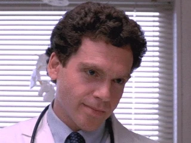

Nightmare on Elm Street
A Classic Horror Film
Plot
"Nightmare on Elm Street" is a horror film directed by Wes Craven. The story revolves around the vengeful spirit Freddy Krueger, who haunts the dreams of teenagers in the fictional town of Springwood. If Freddy kills you in your dream, you die in real life. For more details, check out the IMDb page.
Characters
-

Freddy Krueger - The main antagonist
-

Nancy Thompson - The protagonist
-

Glen Lantz - Nancy's boyfriend
-

Tina Gray - One of Freddy's victims
-

Rod Lane - Another victim of Freddy
-

Dr. King - The town's psychiatrist
-

Lt. Donald Thompson - Nancy's father and a police officer
Trailer